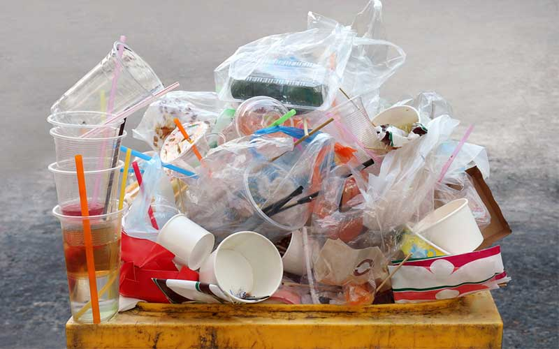
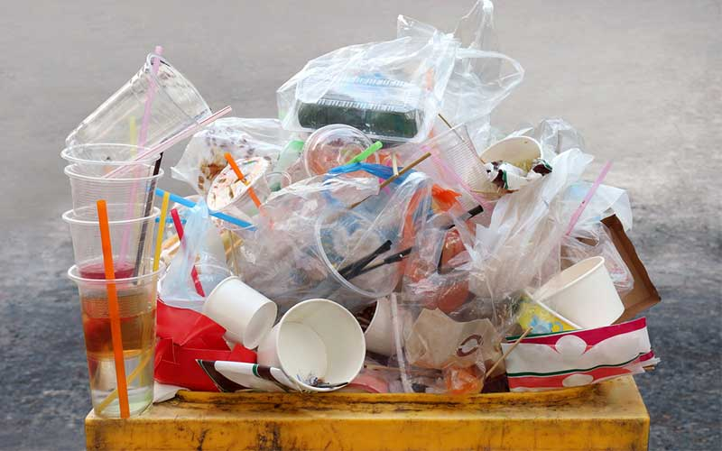

Your Waste Material is Plastic.
 

Plastic waste is one of the biggest environmental problems because it does not decompose easily and can stay in the environment for hundreds of years. When thrown away carelessly, plastic pollutes land and water, harming wildlife and marine life. Small plastic particles, called microplastics, can enter the food chain and pose health risks to humans and animals.
Recycling plastic is the best way to reduce waste and pollution. Many types of plastic can be melted and reused to make new products. Proper disposal, such as recycling and reusing plastic items, helps keep the environment clean, saves resources, and reduces the harmful effects of plastic waste.
Back To Home Page